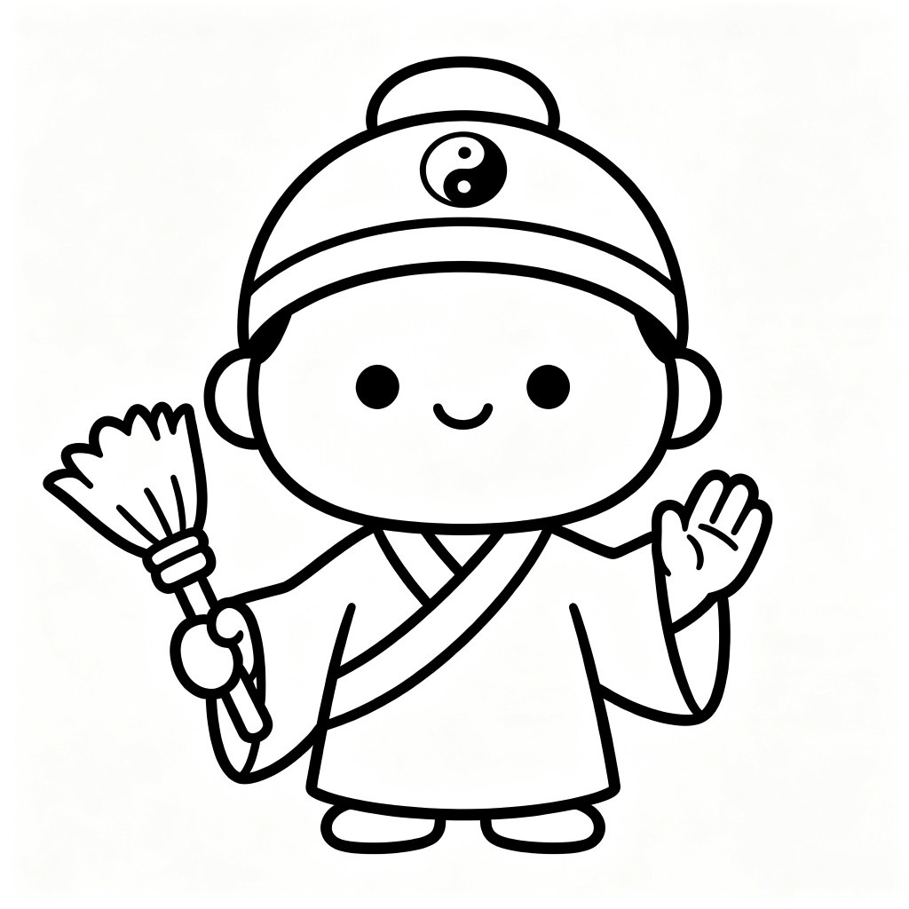

掌纹秘语
传统文化 · 智能解读 · 24种掌纹分类
Demo 演示版本 · 仅供体验
探索你的掌纹密码
拍照识别，发现属于你的掌纹类型
拍照识掌纹
手机拍摄手掌，智能识别三才线型
每日运势相伴
基于掌纹特征的每日正能量小贴士
求签问卜
摇签解惑，得到你想要的指引
📸 拍摄或上传手掌照片
AI 将自动识别三才基础型与辅助线组合
点击拍照或从相册选择
请将手掌平放，光线充足
🔒照片仅在本地处理，不会上传至服务器，请放心使用
正在识别掌纹...
智能分析三才基础型与辅助线组合
🚀
您的掌纹类型
川字掌 · 天选之才
基于经典三才分类法 + 辅助线组合鉴定
感情线 · 情感特质
85智慧线 · 思维特质
78生命线 · 活力特质
92🚀
小道长状态
💧 脚踏水波，拂尘指向前方
浑身散发自信光芒，所过之处水波荡漾
「让我来开创新天地！」
深度解读
本内容由 AI 生成，仅供娱乐参考，不代表专业命理判断
🧩 你的MBTI类型是？
掌纹揭示先天特质，MBTI反映后天性格，两者结合更精准
已选择
请选择MBTI类型
川流不息·开创者
×
INTJ
融合性格画像
🎋 摇签解惑
心诚则灵，默念你的问题，摇一签获得指引
👆 点击签筒摇签
🎋
上上签
第 签
签文
解签
指引
✨ 每日可摇签三次，心诚则灵
🌟 今日运势
88
运势分
🔮 运势解读
今天你的能量场格外强劲，适合突破舒适区，尝试新事物！
💡 今日建议
保持开放的心态，机会往往出现在意想不到的地方。
🖐️ 你的掌纹类型
川流不息·开创者 · 川字掌 · 天选之才